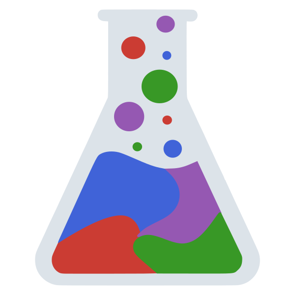

ChemistryLab.jl carries a chemical problem from its written formulas to its equilibrium state. Formulas, species, reactions and stoichiometric matrices are first-class objects, thermodynamic databases are imported in the formats in common use, and equilibrium is computed by Gibbs energy minimization and returned with a certificate stating what it proves. Every quantity carries its unit, and exact ForwardDiff derivatives pass through equilibria, kinetic runs and recipes. Initially focused on cement chemistry — CEM I to CEM V entered from an oxide analysis — its scope is that of aqueous and mineral systems at large. Developed with Anthony Soive and released under LGPL v2.1+. Part of the MicroPoroChemoMechanics ecosystem.
Key features
- Formulas, species and reactions — chemical formulas with charge, Unicode and PHREEQC notations;
SpeciesandCemSpeciesfor solution and solid phases; stoichiometric matrices built automatically - Thermodynamic databases — databases of reactions (PHREEQC, The Geochemist’s Workbench, EQ3/6) and of formation properties (JSON and YAML formats) imported with the activity model they were fitted with; none is stored in the package: the freely redistributable ones are downloaded from their publisher on first use and checked against a SHA-256, the others installed by hand under their publisher’s terms
- Certified equilibrium — the certificate says what it proves: global minimum, KKT point or self-consistent speciation, each element balance judged against its own total
- Activity models — B-dot, Davies, Truesdell–Jones, SIT and Pitzer; SIT and Pitzer solutes solved by Newton, halite solubility within 0.3 % of its measurement
- Solid solutions — ideal, Redlich–Kister, regular, sublattice (C–N–A–S–H) and compound-energy (CASH+) models, miscibility gaps detected and located
- Surfaces and interfaces — surface complexation, constant-capacitance and diffuse-layer electrostatics, cation exchange and a Donnan layer, checked against PHREEQC
- Recipes, kinetics, heat — binders blended, hydrated, carbonated or leached as recipes; Parrott–Killoh and Waller rate laws; isothermal and semi-adiabatic calorimetry
Installation
ChemistryLab.jl is registered in Julia’s General registry. Solving an equilibrium needs an optimization backend, loaded through a package extension; OptimaSolver.jl is the default one, and the one the certificate needs:
using Pkg
Pkg.add(["ChemistryLab", "OptimaSolver"])
using ChemistryLab, OptimaSolver # OptimaSolver: the default equilibrium backendOptimization with OptimizationIpopt remains available as a backend. A database is downloaded once, on first use; fetch_databases() prepares a machine for offline work.
Links